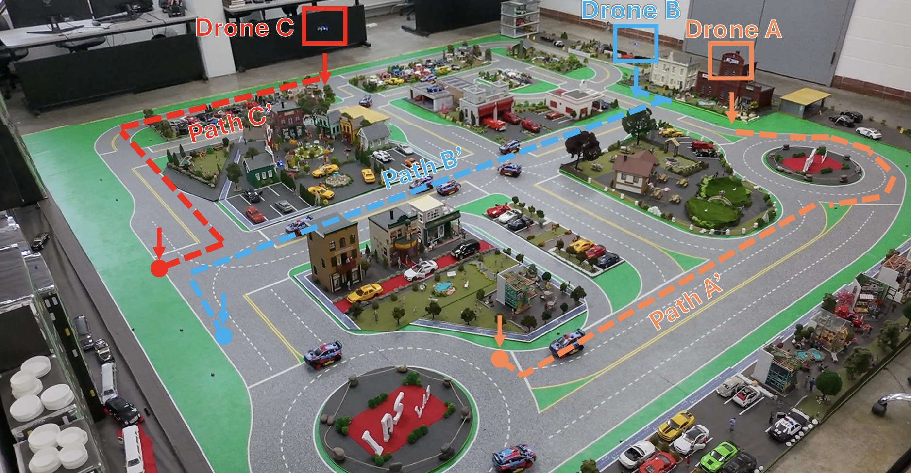

Cooperative Detour Planning for Dual-Task Drone Fleets [link]
IEEE Conference on Decision and Control, 2026. Invited Session: Modeling and Control for Scalable Advanced Air Mobility Systems.
A decentralized framework for drone fleets that execute delivery tasks while observing traffic conditions. The method maximizes traffic information rewards under delivery detour and battery constraints.